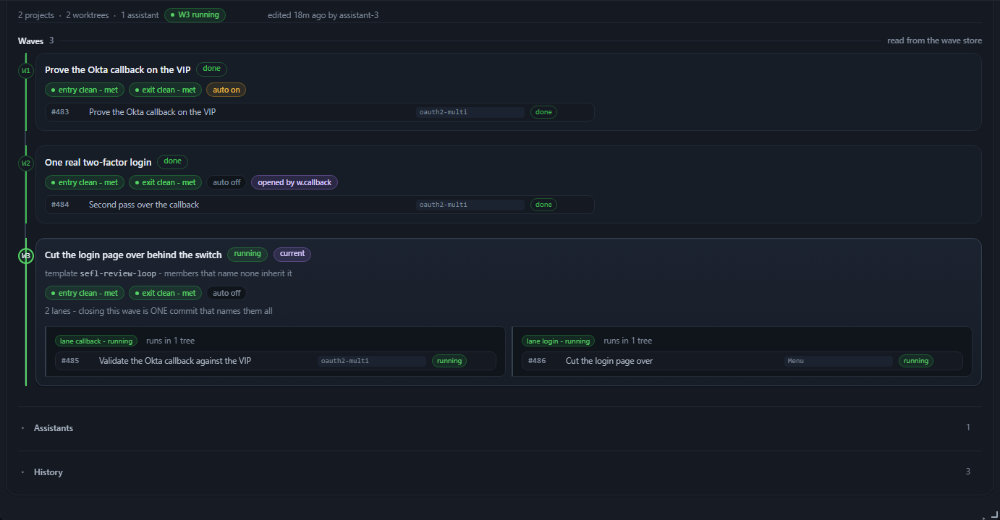
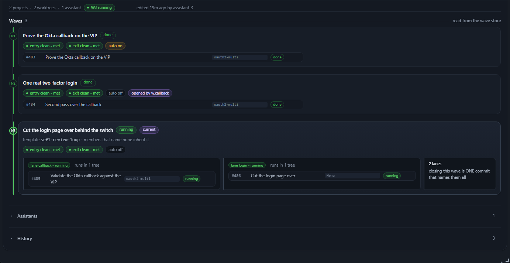
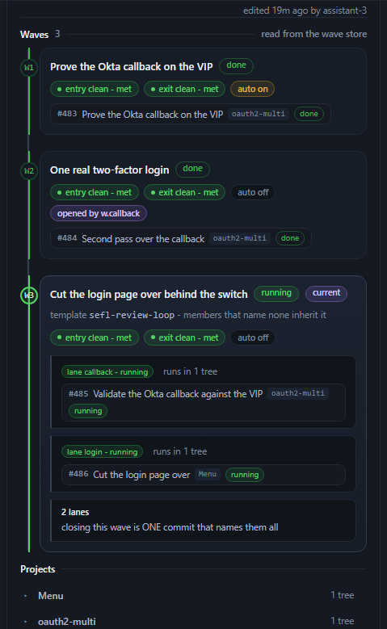
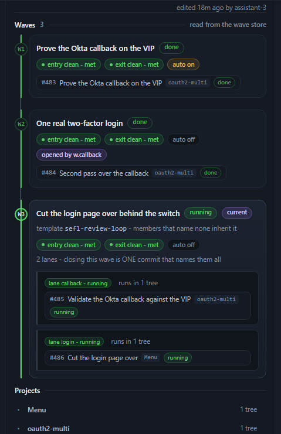
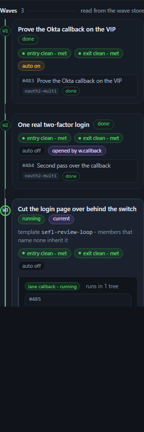
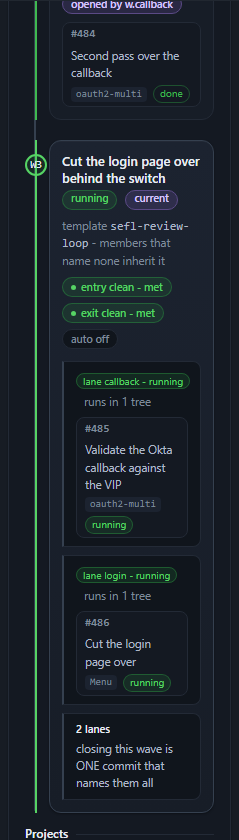
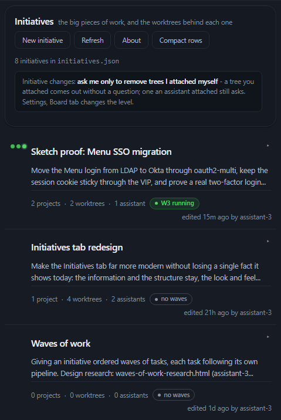
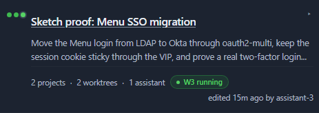
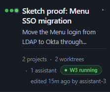
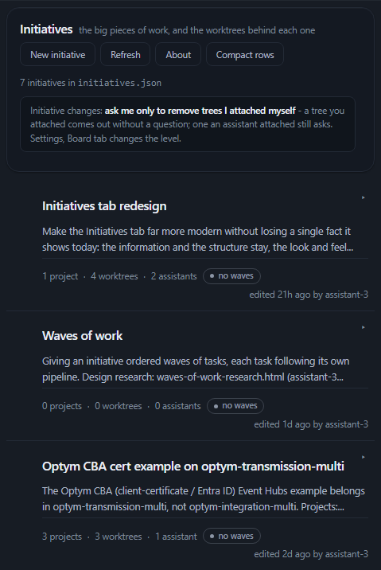

The Route against THE SKETCH: proved on an initiative that has waves, one gap closed
The tab was proved on an initiative with three ordered waves, six gate answers, an auto switch that opened a wave, two lanes and four task cards. The spine, the stations, the gates, the lanes, the members and the closing note all draw from that read. One sketch element was under-drawn - the closing note - and it is now a box that stands beside the lanes. The other differences are named with the reason they were kept. The throwaway was deleted, and the seven real initiatives still hold zero waves.
1The measured cause, reproduced
Before any wave exists, the tab is not broken: it is empty. This is the state the brief named, read back with counts rather than described.
On the reader's panel (127.0.0.1:7331, 1.157.6) every initiative read zero waves, so
lib/waves.js folded no station, no gate and no lane, and the renderer drew exactly what it is allowed to
draw when a card has none: the toolbar, the folded title card, the status word and the glyph slot.
| What the read answered | Count | Where it comes from |
|---|---|---|
| initiatives in the store | 7 | GET /api/initiatives -> initiatives[] |
folded title cards (.init-card.is-titlecard) | 7 | all seven |
.init-status reading "no waves" | 7 | public/core/initiative-fold.js:288 routeGlyph |
route dots (.init-glyph i) | 0 | one dot per wave, so none |
rows with has-route | 0 | class only when there is a dot |
.wave-row stations | 0 | public/assistant.js:3896 calls wtWavesLane.laneHtml |
.wave-lanes blocks | 0 | public/core/waves-lane.js:184-205 |
waveStatus.found | false | file C:\Users\roper\.wag\state\waves.json does not exist |

68eac45f), which is the cleanup proof.Why no wave can appear: a wave is not stored on the initiative. lib/waves.js:323 wavesFor
buckets the queue's tasks by waveId and folds each bundle through deriveWaveState
(lib/waves.js:885); the lane set is derived from the members' lane field
(lib/waves.js:691). With no task naming a wave, there is nothing to fold. And no route can create one:
routes/waves.js:110
sendJson(res, 405, { error: `${req.method} is not allowed on ${route} - this slice reads waves and writes none` });So the tab's empty state is not a rendering defect. It is the store's state, and the tab says so in words on every row. The brief's measured cause is reproduced, and the rest of this page is what happens when the store has something in it.
2The throwaway, built through the panel's own routes
One initiative, three ordered waves, both gates on every wave, one auto switch, two lanes on the third, four task cards naming two real worktrees. Everything the panel can create was created through its own POSTs.
The proof ran on a copy of the reader's state, served at 127.0.0.1:7332 with
WAG_HOME under the scratch directory, so no write could reach the panel the reader is using. The copy was
seeded in this order:
| Step | Route | What it created |
|---|---|---|
| 1 | POST /api/initiatives | the initiative "Sketch proof: Menu SSO migration", 8th in the list, id init_mwsqvhzu_2ynjd8 |
| 2 | POST /api/initiatives/move x2 | two real worktrees attached: oauth2-multi/.worktrees/pictureviewer-sso-option-a-implement-the-839d5a and Menu/.worktrees/modernize-the-menu-login-e4affd |
| 3 | POST /api/assistant/queue action:"add" x4 | four task cards, each naming a waveId; the two on the third wave also name a lane |
| 4 | POST /api/assistant/queue action:"state" x4 | two moved to done, two to running |
| 5 | no route exists | the three wave records, written to the copy's state/waves.json |
The brief said "then the wave routes". There are none.
The only writer of waves.json in the panel is a person with an editor: routes/waves.js
answers 405 to every method but GET (line 110, quoted above), and lib/waves.js exposes readers
(wavesFor, deriveWaveState, waveLanes, waveAutoOpens) and no
writer. The three wave records were therefore authored into the copy's store file by the seed script, and everything
else - the initiative, its two trees, its four tasks and their states - went through the panel's own routes. No DOM
was written by hand at any point: the render below is the shipped painter reading the store.
This is also the structural finding of this page: a reader cannot make a wave in the panel, so a real initiative can never leave "no waves" without hand-editing a file. Section 8 says what must change for that, and section 2's table is the shape that route would need to accept.
What the read folded for the three waves
Every word below is the read's, not the seed's: the state word, the gate answers, the switch sentences and the lane
reads all come back from GET /api/initiatives after the write.
| Station | Title | State | Gates | Auto | What opened it |
|---|---|---|---|---|---|
| W1 @1 | Prove the Okta callback on the VIP | done | entry met, exit met | auto on | a person: it is first in the sequence |
| W2 @2 | One real two-factor login | done | entry met, exit met | auto off | opened by w.callback: its auto is on and its exit gate reads met |
| W3 @3 | Cut the login page over behind the switch | running | entry met, exit met | auto off | a person: W2's switch is off, so it never opens W3 |
W3 holds two lanes: callback (1 tree: the oauth2-multi worktree) and login (1 tree: the
Menu worktree), both read ok, and the set answers laneJoinOwed: true, which is the sentence
the closing note carries. The derivation reproduces the sketch's own example exactly: the sketch's 1.2 says "opened by
w.callback", its 1.3 says "auto off" with no opener, and this read says the same two things about its own W2 and W3.
3THE SKETCH, element by element
Left column: what the sketch draws. Middle: the element that draws it here, with its selector. Right: the verdict and the reason. Numbers are measured on the wide pane (1382px) unless a width is named.
| The sketch | The live element | Verdict | Why |
|---|---|---|---|
| Toolbar: "Initiatives 4" with the count in the title, "4 in initiatives.json" under it, "ask me for everything" at the right, two buttons. | #as-initiatives .as-head title and one-line description; a hint line "8 initiatives in initiatives.json"; the tier box "Initiative changes: ask me only to remove trees I attached myself"; four actions (New initiative, Refresh, About, Compact rows). |
different | The count moved to the line the buttons left, and the hint states the tier in force (here own, not the sketch's "everything"): four actions do not fit beside a title at the 479px docked pane, and the tier sentence is the tab's own security statement (routes/initiatives.js tier read per request). |
| Folded row: a route dot per wave at the left, current one ringed. | .init-glyph i in a reserved 27px slot, one dot per wave, tone from the wave's folded state, is-current ringed; aria-hidden with the status word carrying the fact. Measured: 3 dots, is-done, is-done, is-running is-current. |
matches | The slot is reserved on every row (public/style.css:5155-5167), so titles keep one left edge across a ledger where only some rows have a route. |
| Folded row: the status word at the far right, with the chevron beside it ("W3 running v"). | .init-status "W3 running" at the end of the counts run; .init-caret absolutely at the row's right edge (8px in). |
different | The counts are one sentence by decision (public/style.css:5219-5232: "Three counts, a status word and the provenance line share one 11.5px row"), and the right edge belongs to the provenance and the chevron. At the 239px pane a right-aligned status would leave the title about 100px. Ranked as change 2 in section 7 if the ledger grows. |
| Folded row: a one-line preview cut with three dots. | .init-desc.is-cut, cut on a canvas and backed to a whole word (public/core/initiative-fold.js:87 cut), re-cut on rail resize; two lines at every width here. |
matches | Two lines is the live allowance; the cut never lands mid-word, which the sketch's dots do not promise either way. |
| Folded row: counts, then "edited 6h ago by assistant-1". | chips "2 projects . 2 worktrees . 1 assistant" plus .init-meta "edited 15m ago by assistant-3", pushed right by margin-left:auto. |
matches | The attribution comes from the store's updatedAt/updatedBy; at narrow panes it wraps to its own line, which the sketch has no narrow case for. |
| Open card: description on the left, a PROJECTS column at the right with per-tree counts and "+ Add a worktree". | .init-side with the section head "Projects", .init-project rows "Menu 1 tree" and "oauth2-multi 1 tree", .init-add "+ Add a worktree". Measured at 1382: the column is 785px wide beside a 543px description. |
matches | Below a 900px container the block moves under the description instead of squeezing; the sketch has no narrow case. |
| Open card meta: counts, edit attribution, Edit at the end of the line. | .init-chips with the same three counts, the status word, the attribution; .init-mini "Edit" in the title row, right-aligned. |
matches | The control moved to the head so it sits beside the title it edits; the facts on the line are the sketch's. |
| The spine: one line down the block with a station per wave. | .init-waves::before at left:9px, 2px; each .wave-row::before paints its own stretch in its state colour from data-wave-state (public/style.css:5461-5477). |
matches | The colour is the server's attribute, so a stretch can never disagree with the chip beside it. This is closer to the sketch's picture than round B's own token sheet, which drew a spine per row. |
| A coloured dot at each station on the spine. | .wave-pos: a 22x22 circle on the line, mono 10.5px, border and text in the station's state colour; the current station gets a 2px border and a run-tinted fill. |
matches | The mark carries the number, so the number needs no second label; the state colour is the same colour the spine stretch and the chip use. |
| Station numbering "1.1 / 1.2 / 1.3". | "W1 / W2 / W3" (.wave-pos, from the wave's position). |
different | The leading number in the sketch is the card's ordinal in a list that reorders by edit time (updatedAt), so the same wave would change its number under the reader. W<position> is the store's own order and does not move when the card does. |
| Station title, then the state word at the far right in small caps ("DONE", "RUNNING"). | .wave-title plus a .wave-state pill beside it ("done", "running"), 10.5px, with a state dot; a "current" chip follows on the current station. Measured: the chip starts 209px into a 1282px head. |
different | Round B's own token sheet settles it: docs/assets/initiatives-redesign/b/tokens.css:400 - "The state belongs to the title, not to the far edge of a 1380px row: pack it beside the name and let the template take a line of its own". The live comment at public/style.css:5481 repeats it, and the word stays the store's lowercase state rather than a painted cap. |
| Gate chips: "entry clean met", "exit clean met", "auto on". | .wave-gate.is-met "entry clean - met", "exit clean - met" with a 5px answer dot; .wave-auto.is-on "auto on" in warn, .is-off in idle; W2 adds the violet "opened by w.callback" (public/core/waves-lane.js:51-57, 126-130). |
matches | Each chip names the check and the read's answer; the dash before the answer is the live wording, and the colour is never the only signal. |
| A "current" chip on the station the order makes current. | .wave-current (violet) on W3, from waveCurrentId. |
matches | The read names the current station (running first, then ready, then not entered); the chip says which. |
| Template line: "template 'turnover' unreviewed - the bundle does not hold this id". | .wave-template "template sefl-review-loop - members that name none inherit it"; an unresolved id draws "unresolved - the bundle does not hold this id" in --tab-bad. |
matches | The same sentence in both shapes: the id, and whether the bundle holds it. This run's template resolved, so the resolved wording is the one drawn. |
| A nested task card per station: id, title, a second line naming the project/tree, the state at the right. | .wave-member: #483, the title, a mono project tag (oauth2-multi), a state chip (done). At a 900px+ container it is a 4-column manifest (44px id / title / 150px project / 80px state) capped at 760px (public/style.css:5576-5594). |
matches | The sketch stacks the project under the title; the manifest is the documented choice so two members compare down a column. The member's state is the task's own, never the wave's. |
| Two lane cards side by side, each "auth/callback - running" and "runs in 1 tree", with its own task card. | .wave-lanes grid, .wave-lane x2 with the chip "lane callback - running" and "runs in 1 tree"; members inside their lane. Side by side at a 900px+ container (535px each after the fix), stacked below it. |
matches | A lane block is drawn only when the wave holds more than one lane (public/core/waves-lane.js:98-105), which is the same condition the close depends on. |
| The closing note: a box at the right of the lanes, "2 lanes" bold above "closing this wave is ONE commit that names them all". | Before: a full-width 11.5px ink-3 line above the lanes ("2 lanes - closing this wave is ONE commit that names them all"). After: .wave-close holding the lanes and a boxed .wave-join whose count is a bold lead; beside the lanes at 900px+, above them below. |
fixed | The one element the renderer under-drew. Section 4 has the measurements. public/core/waves-lane.js:143-157, public/style.css:5530-5544, and a new test at test/waves-lane.test.js:294. |
| Assistants and History as two open columns at the card's foot. | Two disclosure rows (.init-assistfold "Assistants 1", .init-histfold "History 3") that open to the same rows, stacked. |
different | Folded is the documented choice - the card stays a map, and the counts are on the closed row. They stack at every width because each is an independent section of the card, not a paired column; the folds already save the vertical space the sketch's pair was saving. |
| No section head above the stations. | .init-sechead "Waves 3" with the note "read from the wave store" (public/core/waves-lane.js:201). |
different | The line states where every word below it comes from and that nothing there writes a wave - the tab's read-only boundary, which the sketch does not draw because the sketch assumes waves can be made. |
| No border around a station; the nested cards carry the border. | .wave-row is a bordered plate on --tab-row; the current station is raised with --tab-e1. |
different | The plate groups a station's gates, lanes and note into one block, and gives the current station an edge to differ by; measured at 1308px wide, the unboxed row leaves the gate chips floating between stations with nothing holding them. |
| A wave-less card: the row shape, with "no waves" at the right. | .init-status "no waves" with the idle tone, 0 dots, no has-route, and no wave section at all (laneHtml returns ""). |
matches | An empty section on every card is a box a reader learns to skip; the row shape and the words are the sketch's. |
21 rows: 13 match, 1 fixed, 7 deliberately different. The seven differences are not omissions: each is a decision the code states in a comment or the token sheet states in a line, and each keeps a fact the sketch's picture does not have to carry. The one element that was genuinely under-drawn is the closing note.
4The one fix: the closing note
The sentence that says what closing costs was the least-read sentence in the wave. It is now a note, and at a wide pane it stands where the sketch puts it: beside the lanes it is about.


.wave-close is one row: two 535px lanes and a 196 x 87 note at x=1157 on
--tab-sunken with a 2px --tab-line-strong lead edge. "2 lanes" is the lead in
--tab-ink; the sentence is --tab-ink-2, 9.14:1 on that fill.What changed, in three files:
public/core/waves-lane.js:143- the join keeps itsdata-wave-join="2"attribute and its words, and gains a lead:<b>2 lanes</b> <span>closing this wave is ONE commit that names them all</span>.public/core/waves-lane.js:148-157- the lanes and the note are wrapped in one.wave-closeblock when both are owed, so the note can stand beside them. A refused lane set keeps its lanes and draws no note: the two sentences would contradict each other, and the existing test for that still passes.public/style.css:5530-5544- the note's box (border, 2px lead edge, sunken fill, 8px radius) and the container query at 900px that turns the block from a column into a row with a 196px note.test/waves-lane.test.js:294- one test: the block wraps, the count leads, and a refused set draws neither the block nor the note.
The cost, measured
| Pane | Before | After | What it costs |
|---|---|---|---|
| 1382 (float) | note 1282x17 line at y=497; lanes 637x70 and 637x70 | note 196x87 at x=1157; lanes 535x87 and 535x87 | each lane gives up 102px. One member row wraps to two lines ("Validate the Okta callback against the VIP"), so the lane row grows 70 -> 87 (+17px). The note and the lanes are the same height, so nothing below moves by more than that 17px. |
| 479 (1440 docked) | note 379x17 at y=618, above the lanes | close block 379x231, note 379x53 below the lanes at y=802 | none: the lanes keep 379px and the note is full width under them. |
| 347 (768) | line above, 247 wide | 379 -> note 247 wide, three lines under the lanes | none; the whole block fits a 900px viewport (891px of wave block). |
| 239 (480) | line above, 139 wide | note 139 wide, three lines, under the lanes | none; the block is 1289px tall and scrolls, as it did before. |
The full block at the docked and narrow widths:





5The visual system as tokens, with values, on a real capture
The tab's look is a token layer: 30 named values under #as-initiatives. The table is the
layer; the capture above it is the layer applied to a real read. Contrast is recomputed here with the WCAG 2.1 formula,
not quoted.
| Token | Value | Where it lands in the capture |
|---|---|---|
--tab-ground | #0f1115 | the app ground behind the pane |
--tab-surface | #141922 | member pills, the station marker's fill |
--tab-row | #171d27 | every station plate |
--tab-raised | #1c2330 | the current station's gradient top, the project tag's fill |
--tab-sunken | #10151c | lane blocks and, after the fix, the closing note's fill |
--tab-line | #232a36 | plate, chip and note borders |
--tab-line-strong | #35404f | the spine's unreached stretch, the lane and note 2px lead edges |
--tab-ink | #e9edf4 | station titles, the note's count - 14.41:1 on --tab-row |
--tab-ink-2 | #aeb8c6 | member titles, the note's sentence - 8.43:1 on row, 9.14:1 on sunken |
--tab-ink-3 | #7f8a9a | gate names, counts, template line - 4.84:1 on row, 5.04:1 on surface |
--tab-accent | #3fb950 | a done station's marker text and spine stretch - 6.66:1 |
--tab-run + -bg + -line | #56d364 / rgba(46,160,67,.14) / .42 | the running station: marker border, chip, spine stretch - 8.78:1 |
--tab-warn + bg + line | #e3b341 | "auto on", the current station's 2px marker border - 8.69:1 |
--tab-idle + line | #8b95a5 | "auto off", "auto wait", "no waves" - 5.59:1 |
--tab-bad + bg + line | #ff7b72 | an abandoned station, an unresolved template id |
--tab-fs-title / --tab-fs-meta / --tab-fs-chip | 13px / 11.5px / 10.5px | station titles (measured 13px, 600), the template line and lane read, every chip including the station number |
--tab-lh-tight / --tab-lh-body | 1.25 / 1.6 | station titles / member rows |
--tab-s1 .. --tab-s6 | 4 / 8 / 12 / 16 / 24 / 32px | the 12px plate padding, the 8px gaps, the 16px section gap |
--tab-r1 .. --tab-r4, --tab-r-pill | 4 / 8 / 12 / 16px, 999px | project tag, member and note radius, station plate, every chip |
--tab-chip-h / --tab-member / --tab-row-h | 20px / 26px / 32px | chip height (measured 20px), a member's minimum (26px), a row's minimum |
--tab-font-mono | the UI's mono stack | the station number, the member id, the project tag |
--tab-ring | 2px solid #79b8ff | focus on every control in the tab |
Two of these values moved in this landing: the note's fill (--tab-sunken) and its lead edge
(--tab-line-strong) are new applications, not new tokens. No token value was added, changed or renamed, so
the token layer the tab shipped with is the token layer the sketch's values describe.
6What the tab gets right, and what a restyle must not take
These are the claims the lane makes in its own header (public/core/waves-lane.js:1-26) and
in the CSS comments beside each rule. Each one has a wrong answer that still looks right in a screenshot.
- The state word is the read's, not the record's. A wave has no stored state; the lane draws
wave.state, folded on that read byderiveWaveState(lib/waves.js:885). A painter that defaulted a missing state to "ready" would draw a wave the server never called ready. - A gate chip is an answer, not a label. "met", "not met", "cannot tell", "no gate" and "abandoned" are five
answers (
public/core/waves-lane.js:30), because "the work is not there" and "the panel cannot see it" are different facts. The chip's title carries the sentence behind the answer. - A lane block appears only when the wave holds more than one lane (
waves-lane.js:98-105). A wave with no lane of its own holds one implicit lane and is drawn as it was before lanes existed. - The join sentence is owed only when the set can close. With a refused lane set the lane draws "The lanes
cannot be isolated, so this wave cannot close" and no join at all (
waves-lane.js:138-143), because the two sentences would contradict each other. - The auto switch is drawn as the read answered it.
autois the wave's record;autoOpenis derived from the wave before it (lib/waves.js:973), and a switch that opened a wave says which wave and that nothing was started. This run's W2 is the sketch's own case: "opened by w.callback". - A member's state is the task's own. queued, running, parked and done are drawn verbatim, and a named
abandonment replaces the word rather than being folded into it (
waves-lane.js:60-75). - An initiative with no waves draws no lane.
laneHtmlreturns the empty string (waves-lane.js:189), so the seven cards that have no waves stay title cards rather than gaining a box a reader learns to skip. - A store that cannot be read is said, and repaired by nobody. An unreadable
waves.jsondraws an alert with the error and a sentence saying the file is left exactly as it is (waves-lane.js:193). - The route dots are decorative and the status word carries the fact.
aria-hiddenon the glyph, the same state in words in.init-statuswith a title naming every station - so the tab never carries a state in colour alone. - The 27px glyph slot is reserved on every folded row (
public/style.css:5155-5167), so a route row and a wave-less row share one left edge down the ledger. - The preview is measured, not clipped by characters.
cutwalks back to a whole word, and the cut is redone on rail resize (public/core/initiative-fold.js:87).
7Three smallest changes, ranked by what they buy per file touched
"Bought" here means: the element of the sketch that stops being different, or the fact that stops being hard to read. Lines are the product diff, not the test or the report.
| # | Change | Files / lines | What it buys | Cost or risk |
|---|---|---|---|---|
| 1 | The closing note as a box with the count as a lead done here | 2 product files, +18/-3 | The one sketch element that was under-drawn; the sentence's contrast goes 4.84:1 -> 9.14:1, and at 900px+ the note takes the empty right of the lane row, as the sketch draws it | Lanes lose 102px each at 1382 and one member row wraps (+17px to the lane row). No token, no route, no data |
| 2 | Right-align the folded row's status at 900px+ | 2 product files, ~10 lines (template + one container query) | The sketch's scanning column: every row's state on one edge instead of at the end of a variable-width counts run | The counts sentence loses its last fact at wide only, and the row gains a second place the state can be. Worth it only if the ledger routinely runs past about ten rows |
| 3 | Assistants and History as two columns at 900px+ | 2 product files, ~12 lines (a wrapper and a grid) | The sketch's foot map, one screen instead of two folds | Both folds are closed by default, so most readers never see the pair; the folds already save the height the pair was saving. Lowest value of the three |
Change 1 was taken because the table in section 3 finds exactly one element that is under-drawn rather than decided differently. Changes 2 and 3 are named and not taken: both re-open documented decisions, and neither is needed for the sketch's facts to be true.
8What breaks if only the look changes, and what must change anyway
The shortest honest answer: the look is not the blocker. A prettier lane on a store nobody can write is a preview of a feature the panel does not have.
If only the look changes
- Every real initiative still reads "no waves". Nothing in the panel writes
waves.json(routes/waves.js:110is 405 for every write), so the seven cards stay title cards and the Route is visible only to a reader who hand-edits a file. The proof in this page needed exactly that. - The Route's promise is a sentence about a close the tab cannot perform. "closing this wave is ONE commit
that names them all" is drawn by the tab; the close itself is
lib/waves.jsjoin work driven from outside. A restyle that made the note louder without a route would make a promise more legible, not more keepable. - The lane's claims are data claims, and a look pass can silently break them. If a restyle moved a state into
a class or a stored field, or let a missing gate default to "met", the tab would still look right in a screenshot and
be wrong on the next read. The tests that pin those claims are the ones to run
(
test/waves-lane.test.js,test/waves-derive.test.js,test/waves-auto.test.js,test/waves-lanes-join.test.js). - The description fold re-measures on a font change. The preview cut is canvas-measured
(
public/core/initiative-fold.js:87), so a new size or family re-cuts every preview on the next paint; a look pass that changes either should say so and re-measure, not assume the cut survives.
What must change anyway
- A wave write route, or a named author. The smallest version that makes the sketch's flow real: create a
wave (id, position, title, gates, auto), reorder, and delete - the shape
lib/waves.jsalready reads. Without it the store is an artefact a person maintains by hand, and the tab is a viewer for that person's file. - A lane author on the task. A lane is the member's own
lanefield today (lib/waves.js:691); the queue's add and edit actions accept it, so this half exists - but nothing in the UI sets it, so two lanes can only appear if the tasks were filed with one. - The close itself, or a link to it. The note names the close; the tab should say where it happens, or the sentence is documentation inside a UI.
9The captures: 1440, 768 and 480, with a wave open, a lane open and a folded row visible
Every capture is a real render of the proof panel at 127.0.0.1:7332 with the throwaway
open. The pane is the docked rail at each width, plus the float at 1440 for the wide read the sketch was drawn at.



The wave block at each width is in section 4: 479, 347, 239 top and 239 note, plus the wide pair before and after.


10The throwaway is gone, and the seven still hold zero waves
Deleting it took three writers, because the panel has routes for two of the three things the seed made and none for the third.
| What | How it was removed | Proof |
|---|---|---|
| 4 queue tasks (#483-#486) | POST /api/assistant/queue action:"delete" x4, all 200 | tasks left on any wave: 0 on the re-read |
| 3 wave records | the file this seed created is removed whole | waveStatus.found: false; every initiative reads 0 waves |
| the initiative and its 2 tree rows | no delete route exists (lib/initiatives.js has create, update, move), so the copy's store is edited and the panel re-reads it | 8 -> 7 records; the id is absent from the next GET |
copy before: 8 initiatives; throwaway [('init_mwsqvhzu_2ynjd8', 'Sketch proof: Menu SSO migration', 3)]
task deleted: 200 #483 #484 #485 #486
waves.json removed: .../73596cb0/home/state/waves.json
record removed: 1
store records: 8 -> 7
copy after: 7 initiatives
- Initiatives tab redesign waves 0
- Waves of work waves 0
- Optym CBA cert example on optym-transmission-multi waves 0
- sales-territory-POC bugs: an organized concurrent fix plan waves 0
- Optym CBA Kubernetes setup waves 0
- Converting fleet to Chart.yaml - in-house fleet replacement waves 0
- fleet-kafka: Rating auto que JDBC (OJDBC) Strimzi connectors waves 0
waveStatus: {'found': False, 'readable': True, 'error': None}
throwaway present: False
tasks left on any wave: 0
live panel: 7 initiatives, waves per initiative: [0, 0, 0, 0, 0, 0, 0] waveStatus.found: False
68eac45f46d0eec68e242abd95daec9f): the throwaway left no trace in the ledger, and no capture of it
survives in the panel's state.The reader's own panel was never written to: it was read twice, once at the start and once after the cleanup, and answered the same seven initiatives and seven zero wave counts both times.
11Reproduce it
The scripts that produced every number here are in this folder. They take BASE and
OUT from the environment; the defaults are the scratch home this run used.
# 1. a copy of the panel's state, on its own port, so nothing can reach 127.0.0.1:7331
python docs/reports/../assets/initiatives-redesign/sketch-proof-2026-11-23/seed.py # POST /api/initiatives, move x2, queue add/state x4, waves.json
node docs/reports/../assets/initiatives-redesign/sketch-proof-2026-11-23/capture-live.mjs # the measured cause (read only)
node docs/reports/../assets/initiatives-redesign/sketch-proof-2026-11-23/capture-widths.mjs # 1440/768/480 + the wide float, DOM facts per width
node docs/reports/../assets/initiatives-redesign/sketch-proof-2026-11-23/capture-ledger.mjs # the ledger and the folded route row
node docs/reports/../assets/initiatives-redesign/sketch-proof-2026-11-23/capture-pair.mjs # the before/after pair, one panel, product files switched
python docs/reports/../assets/initiatives-redesign/sketch-proof-2026-11-23/cleanup.py # the three writers, then the re-read
# 2. the lane's own gates
node --test test/waves-lane.test.js test/waves-lanes-join.test.js
npm run test:changed # 47 files, 576 tests
npm test # the full sweep
# 3. the panel's own browser gate for this surface (its own sandbox, its own port)
node tools/verify-waves-lane.mjs --shots <scratch>/laneWhat the seed wrote into waves.json, verbatim
{"id":"w.callback","position":1,"title":"Prove the Okta callback on the VIP",
"entryGate":{"check":"clean"},"exitGate":{"check":"clean"},"template":null,"auto":true}
{"id":"w.second","position":2,"title":"One real two-factor login",
"entryGate":{"check":"clean"},"exitGate":{"check":"clean"},"template":null,"auto":false}
{"id":"w.flip","position":3,"title":"Cut the login page over behind the switch",
"entryGate":{"check":"clean"},"exitGate":{"check":"clean"},"template":"sefl-review-loop","auto":false}The two lanes on w.flip are not in the wave records: they are the members' own lane field
(callback on #485, login on #486), and lib/waves.js:691 derives the lane set from
them on every read. That is why the seed could not have written a lane even if there had been a route: the lane is a
property of the task.